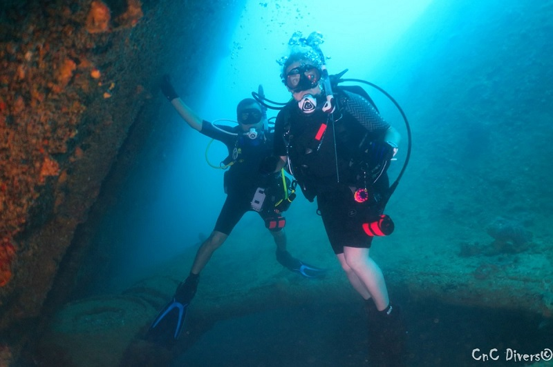

Where it Began 105ft Down
After moving to Guam in 2016, I would constantly drive past the sign for the Padi Open Water Course at MDA for $200. This went on for close to 3 years before I finally took the dive, literally. It wasn't long before not only was I diving on Christmas that year, but I was ready to see and do more under water. After approximately 20 dives with friends and co-workers, I found how to take my hobby to the next level. I am by no means a photographer on land, so this was going to put me at a disadvantage trying to learn the Photography Triangle. This essentially lead to my next addiction, I mean hobby.